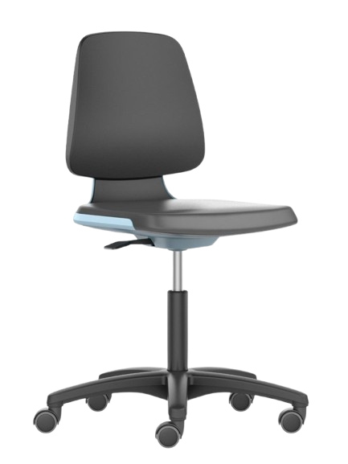
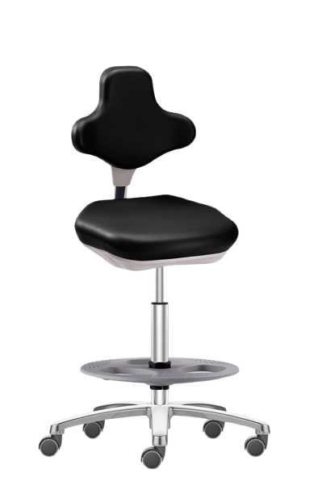

Bimos
Labo- & industriestoelen
Ergonomische werkstoelen die je zelf configureert, op maat van je werkplek.
Over Bimos
Ergonomisch zitten op een gespecialiseerde werkplek
Ook op een meer technische, gespecialiseerde werkplek moet men degelijk kunnen zitten. Aan deze stoelen worden daarom extra eisen gesteld op het vlak van veiligheid, zodat men niet alleen ergonomisch maar ook statisch- en/of stofvrij kan werken.
Bimos is een Duits familiebedrijf, gespecialiseerd in werkplaatsstoelen voor het laboratorium en de industrie. Zij ontwerpen en produceren ergonomische stoelen die zeer bijzondere werkomstandigheden moeten kunnen doorstaan, met de nodige ondersteuning en het nodige comfort voor de gebruiker.

Op maat
Configureer je stoel zelf
Elke werkplek is uniek. Daarom configureert u bij Bimos uw stoel heel eenvoudig zelf.
Cleanrooms
Kies voor ESD-veilige uitvoeringen.
Laboratoria
Kies voor chemicaliënbestendige bekleding.
Productie
Kies voor robuuste materialen.
Pas zithoogte, armleggers en rugsteun aan uw behoeften aan, voor gezond zitten, efficiënt werken en een hoge tevredenheid van uw medewerkers.
Modellen
Enkele van onze Bimos-stoelen
Laboratoriumstoel Labsit
Bekijk product
Industriestoel Neon
Bekijk productConfigureer jouw ideale werkstoel
Configureer jouw ideale werkstoel op maat van je werkplek, met optimaal zitcomfort, ondersteuning en functionaliteit voor elke werkomgeving.